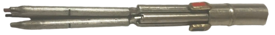

Boscolor Vierfarbstift und Vierfarbkugelschreiber
Color und Boscolor
Stand: 14.02.2026
Der Color
Bayonettmechanismus
In den 1930er Jahren befand sich Pforzheim am Beginn seiner Hochzeit der Mehrfarbstift-Herstellung.
So war nicht nur Fend dort ansässig, sondern auch Bossert & Erhard (1919),
welche den Stift „color“ Februar 1935 zum Patent anmeldeten.
Es war ein vollmetallener Vierfarben-Buntstift mit einem Bayonett-Rastmechanismus und Miniaturdrehführungsvorschub (siehe Minenwechsel-Anleitung).
Nachdem bisher Montblanc zwei Mehrfarbbunstifte von Fend hat herstellen lassen,
stieg man Mitte der 1930er Jahre auf Bossert&Erhard als OEM für diese um, bis man Anfang der 70er Jahre zu Mutschler wechselte.
Auch von Kaweco wurde eine Version des color in Auftrag gegeben.
Der Stift ist äußerst wartungsfreundlich. Wo bei Fend eine Verschmutzung durch die Schieberschlitze ein Problem darstellte,
lässt sich der „color“ einfach durch ein Aufschrauben auseinandernehmen.

Ein dreifarbiger Color.

Die Minenhalteraufhängung. Jeder Halter hängt an einer Zugfeder. Miniaturdrehführungen.
Bossert&Erhard war nicht der erste Hersteller, der Bayonettverschlüsse für die Arretierung genutzt hat, und sie waren auch nicht die letzten.
Das Prinzip fand in Italien und Russland zu den 1960er bis 1980er Jahren erneut Beliebtheit, zu diesem Zeitpunkt aber für günstige Stifte.
Heutzutage (2020er Jahre) erfreut er sich bei 'Machined Pens' Beliebtheit.
Boscolor
Als Buntstift und Kugelschreiber
Unter der Marke Boscolor wurden die größte Zahl an verschiedenen Mehrfarbstiften von Bossert&Erhard verkauft.Jede Art Boscolor gab es auch als White-Label-Produkt für Montblanc, mit denen die Zusammenarbeit durch den color bereits vor dem Krieg angefangen hatte.
Anfangs wurden um die 1940er Jahre herum Schiebestifte ähnlich dem Fend Super Norma hergestellt. Diese besaßen Buntstiftminen wie der color.
Etwa 1950 wurde zu diesem Mechanismus parallel ein eigener eingeführt, welcher robuster sein sollte. Ebenso wurden gleichzeitig auch Versionen als Kugelschreiber vorgestellt.
 Anfang der 1960er Jahre stellten sie Sichtwahlmechanik-Kappendrücker-Kugelschreiber her. Bei Montblanc wurden sie unter Pixomat verkauft. Auch unter Rotrings Marke findet man ihn.
Anfang der 1960er Jahre stellten sie Sichtwahlmechanik-Kappendrücker-Kugelschreiber her. Bei Montblanc wurden sie unter Pixomat verkauft. Auch unter Rotrings Marke findet man ihn.